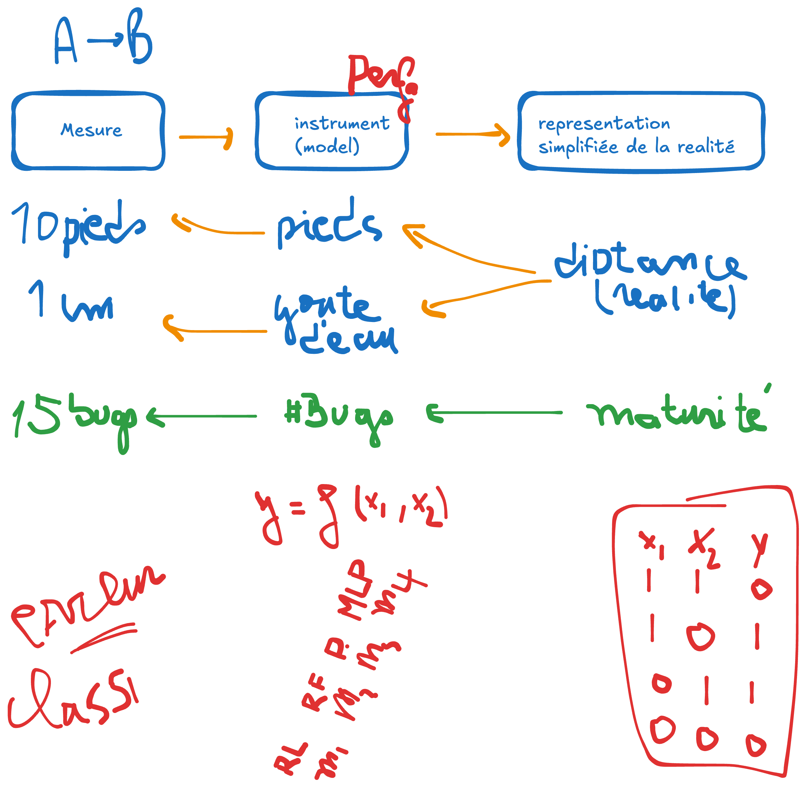
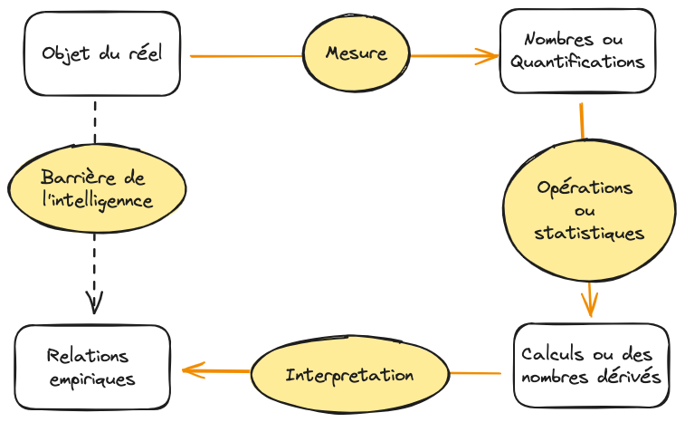
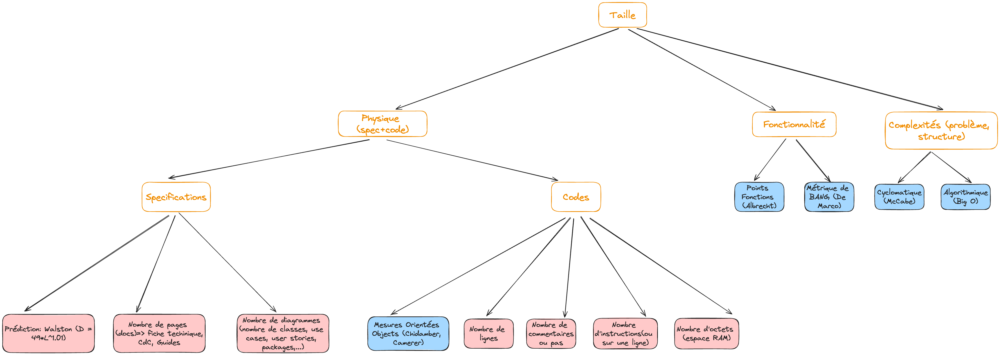
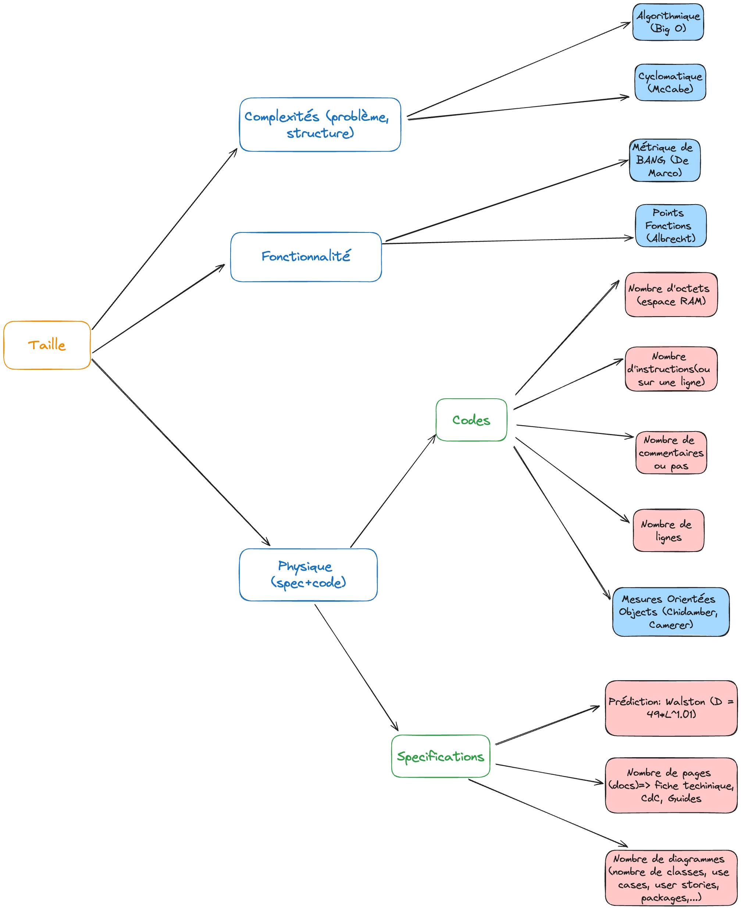

Chapitre 3 : Les modèles et les mesures
Pour évaluer la qualité sans subjectivité, il faut mesurer. Ce chapitre pose la théorie de la mesure (mesure, modèle, échelle) et son application à l’AQL.
Objectifs
À la fin de ce chapitre, vous devez pouvoir :
Expliquer pourquoi on mesure en AQL
Distinguer mesure et calcul, et la notion de modèle
Identifier le type d’échelle d’une mesure
Distinguer les métriques internes et externes de la qualité
Pourquoi les mesures en AQL ?
Éviter la subjectivité dans l’évaluation des critères. Dire « mon logiciel est mature (fiable) » ne veut rien dire tant qu’on ne sait pas comment le comprendre ni si deux personnes parlent de la même chose.
Quantifier ou évaluer un critère/sous-critère : lui donner une valeur, une échelle, une référence.
« Mon logiciel est mature » ⇒ on mesure la fréquence de bugs par mois :
si #bugs < 2 bugs/mois alors mature
sinon immature
Ou en pourcentage :
Mesure ?
Mesure = quantification : donner une valeur à quelque chose dans une unité donnée (poids, distance, durée, …). Une mesure a une unité de référence (unités internationales : m, kg, … ; multiples / sous-multiples).
Mesure vs calcul :
Mesure = quantification directe (ex. cm) ;
Calcul = quantification indirecte, obtenue à partir de mesures (ex. 1 m = 100 cm).
De la réalité à la mesure
Pour obtenir une mesure (la quantification d’une réalité), il faut passer par un modèle (un instrument).
{kind=link}

On n’accède pas directement à la réalité : on passe par un modèle (instrument).
Exemples :
mesurer une distance → le modèle est la règle graduée qui donne des centimètres ;
mesurer la maturité → le modèle est le comptage qui donne un nombre de bugs/mois.
L’approche de la mesure
Plutôt que de déduire directement les relations entre objets (souvent impossible), on passe par un modèle → mesure → calculs → interprétation pour retrouver les relations empiriques qui lient les objets.
{kind=link}

L’approche de la mesure : modèle, mesure, calcul, interprétation.
Échelle d’une mesure
Échelle = modèle + système de relation empirique. On distingue cinq types :
Type d’échelle |
Définition |
Exemples |
|---|---|---|
Nominale |
Classification par attribution de noms |
Masculin/féminin ; mature/pas mature ; vert/jaune/rouge |
Ordinale |
Noms dont l’ordre importe (mutuellement exclusif, conjointement exhaustif) |
Mentions (TB, B, AB, P, …) |
Intervalle |
Classification répartie en distances basées sur des valeurs |
Mentions par intervalles (< 4 ; 4 ≤ x ≤ 8 ; > 8) |
Ratio |
Nombre relatif à une référence (probabilité, pourcentage) |
Zéro absolu (Kelvin) ; 80 % sûr, 60 % mature |
Absolue |
Le nombre lui-même |
Nombre de bugs, de fautes, de lignes, de classes… |
Les métriques de qualité : vues interne et externe
Mesurer la qualité porte sur deux points de vue.
Point de vue interne — spécification, conception, code et tests. Une bonne structure interne ⇒ une bonne qualité du produit-logiciel. Agir en amont sur la structure pour contrôler la qualité : c’est le cœur de l’assurabilité.
Point de vue externe — les attributs observables, par artefact :
Artefact |
Attributs (exemples) |
|---|---|
Spécifications |
Taille (nombre de fonctionnalités, de specs non fonctionnelles), réutilisation, redondance (autres façons de faire : raccourcis, menu contextuel…), modularité, fonctionnalité |
Conception |
Taille, réutilisation, modularité, couplage, cohésion, fonctionnalité |
Code |
Taille, réutilisation, modularité, couplage, cohésion, fonctionnalité, complexités (cyclomatique, Big O…), structure du flot de contrôle |
Test |
Couverture, taille |
{kind=link}

Les attributs mesurables selon l’artefact (spécifications, conception, code, test).
{kind=link}

Agir sur la structure interne pour contrôler la qualité externe du produit.
Les chapitres suivants détaillent les familles de métriques : McCabe & Big O, Point Fonction & Bang, métriques OO et cohésion & couplage.
Exercice
Pour le sous-critère maturité d’une application que vous connaissez, proposez :
un modèle, le type d’échelle, et une mesure chiffrée (ex. 1 − #bugs/#usages
sur 5 ans ⇒ 70 %, échelle ratio).
Comment valider un modèle ?
On valide un modèle par l’expérimentation : le meilleur modèle est le plus fidèle à la réalité (celui qui préserve le mieux la relation entre réalité et représentation).
Validation ⇒ performance (évaluer chaque modèle par rapport à la réalité) ;
performance ⇒ expérimentation (collecter des données réelles et des mesures, puis confronter les deux).